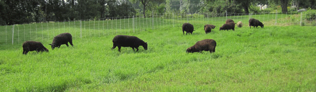

|
Sheep on Grass
|
||||||||||||||
| It is vital the ewe and lambs establish a strong nursing relationship. The lambs will grow and thrive if they are efficient strong nursers. | ||||||||||||||
| Lambs on grass At about two weeks old, lambs have access to an outdoor pasture during the day. They learn to stay together as a flock, to keep track of mom, and to stay away from the electric fence. |
||||||||||||||
| When the lambs learn to move as a flock and stay by mom, they can be moved to other pastures, either walking or by trailer.
Sheep eat grass with vigor and energy. They eat a lot of grass, especially the lactating ewes. Sheep usually eat, chew cud or rest as a group. Any behavior, such as sitting down, or not staying with the flock, when all are eating may indicate a sick or injured sheep. |
||||||||||||||
| Grazing Sheep | ||||||||||||||
|  | The two left photos show sheep just moved to new, high, fresh grass. In the front, the grass is low, as they ate it grazing the day before. | |||||||||||||
| To fully develop their rumens, it is important that lambs have access to enough forage. A well-developed rumen will support their growth, health and in the coming years pregnancies and lactations. | ||||||||||||||
| My sheep are moved every day to a new paddock to graze. This “Management Intensive Grazing” provides them with fresh, lush forage to eat every day. By using many small paddocks, usually twenty one, but up to forty in dry weather, the grass and pasture plants have time to regrow by the time the sheep regraze the paddock. This rest time also breaks the parasite cycle reducing worm load in the pasture and sheep. Water buckets and a mineral/salt box move with the sheep daily. In hot weather, tree shade or a shade structure keep the sheep cool. Portable electric netting and solar chargers make it easy to set up and move paddocks. |
||||||||||||||
| During dry times or drought, supplemental cut grass and plants or hay are fed in a tub or on the ground. | ||||||||||||||